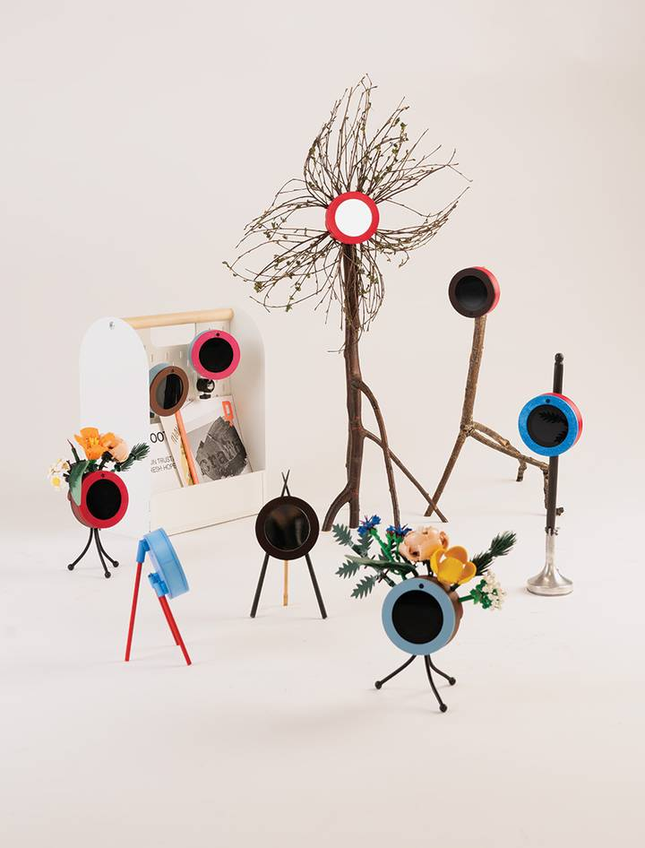

hiCams

hiCams are a private network of interconnected cameras. A camera on one hiCam sends an image to a screen on another. Within the network each pair provides a one-to-one viewing experience. Connection between them is direct — there is no third party (a server) that mediates the communication. Based on a Raspberry Pi Zero, cheap(ish) open-source components and the home 3D printing of parts, we aspired to make hiCams an accessible open technology, distinct in function, aesthetic and ethos to equivalent commercial offers.